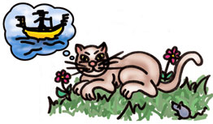

Vacanze a Venezia

Se n'andava un mattino in gondoletta
con l'aria del turista senza fretta
il vecchio cane Fiocco
in calzoncini corti e una paglietta
prestata all'occasione da Enrichetta
cugina zitellona di Barletta
e vagheggiando idilli ormai perduti
ed assopiti, due wurstel si pappava
e appena li finiva, commosso e intenerito
immantinente un altro ne addentava.
E trascorreva lieve la mattina
fra dolci madrigali e versi rari
quando l'idea gli venne tutta a un tratto
di scendere per farsi un bel ritratto
da far vedere ai cani del quartiere
con San Marco, laguna e belvedere.
Ma mentre il poveretto, sceso dal vaporetto
in fila si dispone presso un pittore
pratico e provetto, incalza dalla via
una gattesca e allegra comitiva.
Ma guarda un pò chi fa da cicerone
gattaccio Anselmo, furfante nero
dal tratto un pò sornione
rinomato fior fiore di cialtrone
che conosce le lingue e il linguaggio dei gesti
e le calli descrive ai gattacci maldestri.
Travolto da quell'orda nera e maleodorante
Fiocco perde il cappello
si strappa le mutande,
cerca di redarguire, vociante il torpedone
ma si becca due graffi proprio sopra il groppone
per non parlare, alfine della tela
stracciata e calpestata
ha l'aria di un'aringa affumicata.
Un giapponese alto, per caso di passaggio
mentre fotografava allegro il paesaggio
prendendo appunti vari sul viaggio
esterefatto e attonito la cagnara riprese
per mostrarla, al ritorno all'intero paese
considerando, naturalmente male
che fosse una trovata comunale
per rilanciare il noto Carnevale.
Ma, ahimè, come in tutti i racconti
che cominciano bene e finiscono male
la storia si conclude per tutti all'ospedale.
Il cane fu cacciato con il foglio di via
e il gatto condannato senza amnistia
a far da cicerone per tutta la stagione
a un gruppo parrocchiale di Mestre e Pordenone.
Ma pare che alla fine, ritornati al paese
ciascuno tenga una foto del nemico cortese
da mostrare agli amici per la via
con quanto basta… un pò di nostalgia.
M.J.M 11/98

Fiocco: Fiocco nella parte che fu di Dirk Bogard
Anselmo: Anselmo
L'orda vociante: attori non professionisti presi direttamente dalla strada ed inoltre
Guest Star: Athos in incognito, nella parte del turista giapponese.